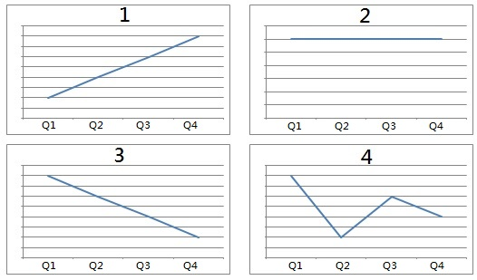

Questions 1 through 3 refer to the following conversation: 00:00 00:00 01:21 |
| M: I simply love visiting Korea in the winter, as the countryside is usually decorated in snow. I enjoy watching snow falling from the sky, and I love being surrounded by it. There are also several ski resorts within a few hours' drive of the capital, Seoul. The weather there is cold, but not too cold. W: It sounds very similar to my hometown. M2: What a coincidence. Me too! M: My apologies. I forget where both of you are from! W: No need to apologize. I don't think I've ever mentioned it! I'm from a suburb of Vancouver, Canada. It's actually only a 30-minute drive from Whistler, a famous ski resort. M2: And I'm from Austria. We are known worldwide for our ski resorts! M: Lucky for you two! You'd probably both really like Korea in winter then! W: To be honest, I've already had my fair share of snow and skiing back home. When it comes to holidays, I prefer tropical destinations. M: No wonder you and your husband chose to celebrate your tenth year of marriage here in Fiji! What about you, Kevin. Do you fancy a trip to Korea next winter? M2: I've actually been several times on business, but unfortunately I didn't have time to hit the slopes. M：我就是愛在冬天去參觀韓國，因為鄉村通常被雪裝飾著。我喜歡看雪從天空落下，我喜歡被它包圍。距首都首爾幾個小時車程內還有幾個滑雪勝地。那邊天氣很冷，但又不會太冷。 W：聽起來很像我的故鄉。 M2：真是巧合阿。我的也是！ M：對不起。我忘記了你們兩個是哪裡人。 W：不需要道歉。我不認為我曾經提過！我來自加拿大溫哥華的郊區。實際上距離著名的滑雪勝地惠斯勒只有30分鐘的車程。 M2：我來自奧地利。我們的滑雪勝地世界著名！ M：你們兩個真幸運！那你們應該會很喜歡韓國的冬天！ W：說實話，我在家鄉時已經看夠雪也滑夠雪了。說到假期，我喜歡熱帶地點。 M：難怪你和你丈夫選擇在斐濟慶祝你的結婚十週年！你呢，凱文？你明年冬天想去韓國旅行嗎？ M2：我實際上去那邊出差了幾次，但很遺憾並沒有時間去滑雪。 |
Questions 4 through 6 refer to the following conversation:
00:00 00:00 01:02 |
|
| W: For here or to go? M: For here, please. W: OK, got it. M: Um…Why did you put it in a plastic cup if I said for here? W: Oh, we put all of our iced beverages in plastic cups. We don't have any glasses. M: That's really too bad. It's such a waste. Could you please put it in a mug then? W: Of course. M: May I ask…Why don't you guys have any glasses? W: We used to have some, but many of our customers complained. They like the convenience of being able to leave quickly if necessary and just take their beverage with them. M: Well, I would strongly appreciate if you could mention to your manager that some customers, such as myself, would still prefer the glass ones. W: I am the manager, actually. Thank you for your suggestion. I'll order some glasses in, and they should be here within a week. W：內用還是外帶？ M：麻煩內用。 W：好，知道了。 M：嗯...我已經說是內用了，你為什麼還把它放在塑料杯裡？ W：哦，我們把所有的冰飲品都放塑料杯裡。 我們沒有任何玻璃杯。 M：真是太糟糕了。 這是一種浪費。 你能把它放在馬克杯裡嗎？ W：當然。 M：我可以問...你為什麼沒有玻璃杯嗎？ W：我們以前有一些，但有很多客戶抱怨。他們喜歡能夠方便地快速離開，如果必要的話，只需直接帶走他們的飲料。 M：嗯，若妳能向妳的經理提到有些客戶(如我自己)仍然喜歡用玻璃，我會很感激的。 W：其實我就是經理。 感謝您的建議。 我會訂一些玻璃杯的，它們應該會在一個星期內送達。 點單項目 1.熱飲 2.冷飲 器具 3.冷飲玻璃杯 4.熱飲馬克杯 |
Questions 7 through 9 refer to the following conversation: 00:00 00:00 00:40 |
| M: Excuse me. Can you tell me how to get to the New Museum of Contemporary Art? W: The New Museum of Contemporary Art? It's near here. You must be new to the city. It's the most well-known landmark in town. M: Right. I've only been here for a couple of days. I'm visiting my best friend. He suggested the New Museum as a good place to visit. But he has a meeting today, so I'm going there alone. W: It's located at 235 Bowery. You can take tram M103 to Prince and Bowery. You have to hurry up, though; it closes at six p.m. on weekends. M：對不起，可以請你告訴我到新當代藝術博物館怎麼走？ W：新當代藝術博物館？就在這附近。你一定剛到這城市。這是這裡最著名的地標。 M：對。我來這裡才幾天。我來拜訪我最好的朋友。他建議新當代藝術博物館是遊覽的好去處。不過，他今天開會，所以我獨自去這個地方。 W：它位於Bowery235號。你可以搭M103號電車到Prince 和Bowery路。你要快點。周末下午6點就會關館。 New Museum of Contemporary Art 新當代藝術博物館 |
Questions 10 through 12 refer to the following conversation: 00:00 00:00 00:56 |
| M: Mrs. Pitt, did you bring your resume, reference letters, and bio? W: I brought my resume and reference letters, but unfortunately I forgot my bio at home. I was called for this interview this morning so I was in a great rush to leave home. I realize that this probably doesn't seem very professional, but I assure you that this is not normal for me. I could e-mail it to you as soon as I get back home. M: That won't be necessary. I see here on your resume that you recently graduated with a Bachelor of Science. However, the position is open to graduate degree holders only, as mentioned in the job posting. We put much importance on education here at Biovet Solutions. W: I apologize for wasting your time. M：彼特女士，你有帶簡歷，推薦書和自傳嗎？ W：我有帶履歷和推薦信，但不幸的是，我把自傳留在家裡。我今天早上接到面試通知，因此我很趕著出門。我知道這可能不是很專業，但我向你保證，這是對我來說很不正常。 我一回到家就可以寄電子郵件給你。 M：沒有這個必要。我看了你的簡歷，你最近剛大學畢業，拿到理學學士學位。然而，如刊登的職缺，我們的職位是開放給碩士學位。Biovet Solutions很重視學歷。 W：對於浪費您的時間，我深表歉意。 |
Questions 13 through 15 refer to the following conversation:  00:00 00:00 00:54 |
| M: Teresa, I was just reviewing your sales figures from the last year and I find them rather unusual. W: Why do you say that? M: Well, they seem to have fluctuated wildly. Your first quarter was obviously a very successful one, but you failed to meet your quota in the second. In the third you bounced back again, but in the last one you were once again lagging behind. W: Well, there are several factors that can explain that. M: Such as? W: In the first quarter I closed an unusually big deal. The second quarter is always slow in my region, while late summer always picks up again. In the final quarter I had to take over Brenda's role on top of my usual responsibilities so that set me back a little. M: I understand, but we'd still like to see a little more consistency from you next year if possible. M：Teresa，我剛在檢視妳去年的銷售數字，我發現它們相當不尋常。 W：你為什麼這麼說？ M：嗯，因為它們似乎經過瘋狂的波動。 你的第一季顯然非常成功，但你第二季未能達到目標額度。 在第三季，你再次回彈，但在最後一次，你又再次落後。 W：嗯，有幾個因素可以解釋這件事。 M：比如？ W：在第一季，我成交了一筆非常大的交易。 第二季我的區域總是比較冷清，然而夏末總會再次回升。 在最後一季，除了我本身的責任外，我不得不接手布蘭達的角色，所以讓我倒退了一點。 M：我明白了，但如果可能的話，我們還是希望明年能達到更高的一致性。 |
Questions 16 through 18 refer to the following conversation: 00:00 00:00 00:35 |
| W: Excuse me, sir. I am looking for my daughter, Nancy. I just bent over to pick up a bag of potatoes, and when I stood up, she was gone. M: What does she look like? W: She has long straight hair. She's wearing a pink hat and a white dress - oh, by the way, she is six years old. M: Don't worry, ma'am. We'll find her. I will make an announcement first and see if she comes to us. You stay right here for now. If she doesn't come to us right away, I'll dispatch some employees to search every aisle. W：抱歉先生，我在找我的女兒南西。我才剛彎腰挑了一袋馬鈴薯，我站起來她就不見了。 M：她長得什麼樣子？ W：她有長直髮。戴著粉紅色的帽子，白色的洋裝。喔，對了，她六歲。 M：別擔心，太太。我們會找到她的。我先廣播看她會不會來找我們。妳先在這裡等著。如果她沒有馬上來找我們，我會派一些員工到每一個走道尋找。 straight (adj.) 直直的 |
Questions 19 through 21 refer to the following conversation: List of Items
00:00 00:00 00:51 |
|||||||||||||||
| M: Rickter Supplies. Douglas speaking. How may I help you? W: Hi. I just placed an order through your online ordering system but I made one small mistake. M: No problem. I'll help you fix that right now. How long ago did you make the order? W: I just hit confirm about a minute ago. M: Unfortunately, it usually takes about 20 minutes for me to be able to see the order. Could you just tell me what you want to change, and I'll make sure it happens once I receive it? W: Sure. For the neon green post-it notes, I meant to order 2 cases, not 20. M: Got it. I'll make sure we send you 2, not 20. Anything else? W: No. But could you please give me a ring to confirm the change? M: Of course. M：Rickter用品。 我是道格拉斯。請問需要什麼協助呢？ W：嗨！我剛經由您們的在線訂購系統下訂單，但我犯了一個小錯誤。 M：沒問題。我現在幫你解決這個問題。你多久之前訂購的？ W：我大概一分鐘前按下確認。 M：不幸的是，我通常需要大約20分鐘才能看到訂單。 你能告訴我你想調整什麼，我會確保一收到它後就馬上更改。 W：當然。 針對霓虹綠的便條，我是要訂2個，而不是20個。 M：知道了。 我會確保我們寄送2個，而不是20個，還有什麼問題嗎？ W：不，但你能打電話給我確認修改嗎？ M：當然。 項目清單
|
Questions 22 through 24 refer to the following conversation: 00:00 00:00 00:51 |
| M: I heard that you work for the bookstore that's going to close down. W: Yes. It's really sad news. I've been employed there for over two decades. M: So why the big change? W: Rent in that location has gone up dramatically in recent years. What's worse, people are buying fewer and fewer paper books these days. The owner is barely turning a profit. M: That's really too bad. What are you going to do next? W: I'm thinking of executing my lifelong dream. M: Which is? W: I've always wanted to own my own cafe. I've been setting aside money for years. I think I finally have enough start-up capital. All that remains is to find the ideal location. M：我聽說你工作的書店那將倒閉了。 W：是的。真是一個讓人傷心的消息。我在那裡工作超過20年了。 M：是為什麼有這麼大的變動呢？ W：這幾年該地區的租金大幅上漲。更糟糕的是，人們現在購買的書籍越來越少。老闆幾乎賺不到什麼利潤。 M：這真是太糟了。你接下來要做什麼呢？ W：我想要實現我終身的夢想。 M：是什麼呢？ W：我一直想擁有自己的咖啡館。我幾年來一直在存錢。我想我終於有足夠的創業資本。 現在只需找到理想的地點。 close down 停業，關閉 Capital n.本錢、資金 |
Questions 25 through 27 refer to the following conversation: 00:00 00:00 00:37 |
| W: What did you do yesterday? M: I went to the International Information Technology Show. W: Cool. What was your impression? M: There were crowds of people trying to squeeze into the building. I'm kind of an impatient person, so it was really frustrating. W: So I'm assuming you didn't stay for very long? M: Actually, I didn't really have a choice. My son is thinking about majoring in IT. He had been looking forward to this event for some time. We spent the entire afternoon there. W: That's really decent of you. I'm sure your son really appreciated it. W：你昨天做了什麼？ M：我去了國際電腦展。 W：真棒！你的感想如何呢？ M：成群的人試著擠到建築物裡。我是個有點沒耐心的人，所以我覺得很不耐煩。 W：那麼我猜你並沒有待很久吧？ M：其實，我並無選擇。 我的兒子正在考慮專攻IT。 他一直期待著這個展覽。 我們在那待了一整個下午。 W： 你真是不錯。 我相信你的兒子一定很感激。 International Information Technology Show 國際資訊(電腦)展 Impression (n.)印象、感想 Decent (adj.)體面的、親切的 |
Questions 28 through 30 refer to the following conversation: 00:00 00:00 01:01 |
| W: Hi. My name is Helen Smith. I would like to return an item, but I don't know the procedure. M: First, complete a return form, available on our website, remembering to fill in the reason code. Then, choose whether you want to return by express or standard mail. Lastly, please package your return carefully and place the original receipt in the package before you mail it off. The address to mail it to is found on the return form. You will not be reimbursed for the mailing cost, but you will have the option of receiving either a store credit or a full refund to your credit card, that is, if you used a credit card to make the original purchase. W: What happens if I lost the receipt? M: Then you can print off a copy of the purchase invoice that you should have received by email. W: I don't recall receiving that. M: I would suggest you check you junk mail box. It might be in there. W：你好，我是的名字是海倫史密斯。我想退貨，但我不知道退貨程序。 M：首先，填寫退貨單，可於我們的網站取得。記住要填寫原因代碼。然後，選擇你的退貨要用快遞或是平信。最後，仔細地包好妳要退回的東西，然後在寄出之前將原來的收據放在包裹中。郵寄地址可以在退貨單上找到。您不會得到郵寄費用的退款，但您可以選擇接受商店折抵金額或信用卡全額退款，前提是，如果您使用信用卡進行最初的購買 W：如果我的收據不見了會怎麼樣？ M：沒關係。您可以列印出您應該會從電子郵件收到的購買發票副本。 W：我沒有印象有收過那個。 M：我建議您檢查你的垃圾郵箱。 它可能會在那裡。 procedure (n)程序 complete(vt.)完成 express (n.)快遞 |
Questions 31 through 33 refer to the following conversation: 00:00 00:00 00:49 |
| W: You look exhausted, Martin. M: I am. I've been working overtime every day for the last month, even on weekends. W: No wonder. I hope you are getting paid time-and-half for all that extra work. M: Nope. I am on salary. W: If I were you, I'd be looking elsewhere for work. Why don't you just hand in your notice and treat yourself to a holiday. You know, catch up on sleep. Then you can be more refreshed and do whatever it takes to find something better. M: I appreciate your advice, but I'm quite loyal to my company. This situation is only temporary. If I hold out a little longer, surely things will improve. W：你看起來很累壞了，馬丁。 M： 沒錯。我過去這個月每天都在加班，連週末也是。 W：難怪。我希望你加班的時間會得到1.5倍的薪資。 M：不，我是月薪制的。 W：如果我是你，我會找別的工作。你為什麼不提出辭呈，然後休個假呢？你知道的，補個眠。你可以恢復精神，然後想辦法找更好的工作。 M： 謝謝你的建議，但我對我的公司很忠誠。這種情況只是暫時的。如果我再堅持一下，事情肯定會改善。 frustrated (adj.)挫敗的 concern (vt.) 擔心 promise (vt.)保證，答應 raise (vt.)提升 matter (n.)問題 |
Questions 34 through 36 refer to the following conversation: 00:00 00:00 00:41 |
| M: Lucy, you showed confidence and excellent performance this year. We have been very impressed by your performance. Hence, we agree you have what it takes to be the manager. W: Thank you so much. I think this will be a great opportunity for my career development. M: Certainly. And we believe you will make the best of this opportunity. W: Could we please discuss some of the specifics? M: Sure. Let's start with the salary. Your annual base salary will be bumped up to $720,000. W: Wow. I must say I am a little surprised. M: We truly feel you deserve it. M：露西，妳今年表現出色很有自信。我們對妳的表現印象非常深刻。因此，我們認同妳有資格當經理。 W：非常謝謝您們。我想這對我的職涯發展是一個很好的機會。 M：沒錯。我們相信妳會充分利用這個機會的。 W：我們可以討論一些細節嗎？ M：當然，我們從薪水開始討論。妳年薪將會提高至72萬元。 W：哇！老實說我有點驚訝。 M：我們真心認為是妳應得的。 |
Questions 37 through 39 refer to the following conversation: 00:00 00:00 00:38 |
| M: I am curious as to how your company is doing. W: Our recent product launch has put the company in the black. In fact, the earnings are pouring in. M: Good for you guys! So I'm guessing you can expect a big raise on the horizon? W: I will get a 10% salary increase next month. I was already doing OK, so I am more than satisfied. M: Good thing you didn't hand in your notice! W: Yes. Thanks to your advice. I can't believe I almost did that! M: Good fortune comes to those who wait! M：我很好奇，妳的公司發展得如何。 W：我們最近發行的產品讓公司賺進大筆錢。事實上，利潤正開始湧入。 M：對你們來說太棒了！所以我猜你應該可以期待近期大加薪吧？ W：從下個月起，我薪水會調升10％。我的薪水本來就滿不錯的，所以我非常滿意。 M：幸好你沒遞出辭呈。 W：是的。感謝你的建議。我不敢相信我差點這樣做。 M：好運是會留給那些有耐心的人的！ in the black 有利潤 increase (n.)(vt.)增加 fortunately (adv.)幸運地 hand in one's notice 辭職 otherwise(adv.) 否則 |